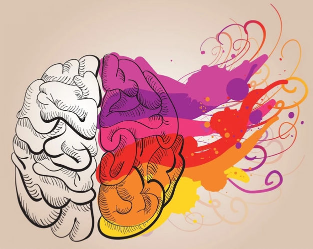
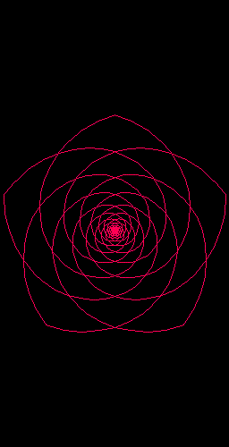

Lorem
La imaginación es la capacidad de visualizar ideas y conceptos abstractos, mientras que la creatividad implica transformar esas ideas en soluciones innovadoras y originales.
La imaginación es la capacidad de visualizar ideas y conceptos abstractos, mientras que la creatividad implica transformar esas ideas en soluciones innovadoras y originales.
Ambos conceptos son cruciales para la resolución de problemas, el avance científico y el arte, permitiendo la exploración de nuevas posibilidades y la expresión única del individuo.
La imaginación y la creatividad son motores de la innovación y la evolución cultural, impulsando el progreso humano a través de la experimentación, la colaboración y la exploración de nuevas fronteras.
El diseño y la creatividad son los pinceles con los que pintamos el lienzo de la innovación, transformando ideas en obras maestras que inspiran, emocionan y cambian el mundo.
El carboncillo o carbón vegetal, se utiliza para hacer dibujos preparatorios, estudios detallados de claroscuro y para esbozar la composición de una pintura de óleo o acrílico. Su uso es muy flexible porque mancha con gran facilidad, proporcionando trazos amplios y la posibilidad de cubrir grandes superficies sombreadas.
a) El carboncillo: Es la forma más corriente y se fabrica en bastones de 13 a 15cms. con diferentes grosores (de 5mm. a 1,5cms.). La mayoría de las marcas ofrecen 3 graduaciones: blanda, media y dura. Pueden usarse por el extremo y también planos en toda su longitud; con un poco de cuidado se pueden afilar con una lija fina. Resulta muy adecuado para dibujos sueltos, amplios y expresivo.
b) El carbón comprimido: Consiste en una mezcla de polvo de carbón con un aglutinante, en algunos casos mezclados con arcilla; resulta más estable que el carboncillo y su intensidad y fluidez se asemejan a la de los colores al pastel. Se presentan en barritas y bastones cuyos trazos y manchas son más difíciles de borrar.
c) El lápiz carbón: Es una barrita muy fina de carbón comprimido protegido por una madera en forma de lapicero de fácil manejo. Es menos sucio que los anteriores, pero no produce trazos amplios porque sólo puede dibujarse con la punta. Es muy adecuado para "toques" en detalle y dibujos más pequeños. Existe la siguiente gama: 6B (extra blando), 4B (blando), 2B (medio), HB (duro).
d) Estos tres tipos de carbón pueden combinarse entre sí o usarse individualmente, pero el carboncillo se usará en primer lugar para plantear y estudiar el tema y los otros dos se usarán principalmente en las fases intermedias y en los acabados.

Las ceras son una mezcla de pigmentos con cera y grasa animal como aglutinante. Por su composición, las ceras aportan a los dibujos, una plasticidad muy característica.
La cera es uno de los medios plásticos con más posibilidades pictóricas. Tanto su aplicación lineal como la utilización de su técnica en el dibujo a base de planos, permiten la elaboración de superficies densas y opacas o bien transparentes y ligeras.

Técnica que se basa en pegar dibujos, fotografías o diferentes objetos (madera, piel, periódicos, revistas, objetos de uso cotidiano, etc) sobre diferentes soportes como cartón, lienzo o madera. El término viene del francés y significa pegado, encolado. Los cubistas como George Braque o el artista español Pablo Picasso fueron los primeros en realizar collages.
Existen otras técnicas relacionadas con el collage como son: el fotomontaje, el decoupage y el ensamblaje.

La acuarela se distingue de otros medios acuosos por ser una pintura transparente en la que el color se trabaja por capas. Los colores resultan muy brillantes y los blancos los dará el blanco del papel. Es necesario utilizar papeles de textura rugosa y alto gramaje para que absorban parte del agua.
Además, la técnica se puede emplear como base para diferentes procedimientos como el estarcido y para jugar con diferentes formas y texturas.

Leonardo Da Vinci
Miguel Ángel
Caravaggio
Diego Velázquez
Pablo Picasso
© Arte y Creatividad